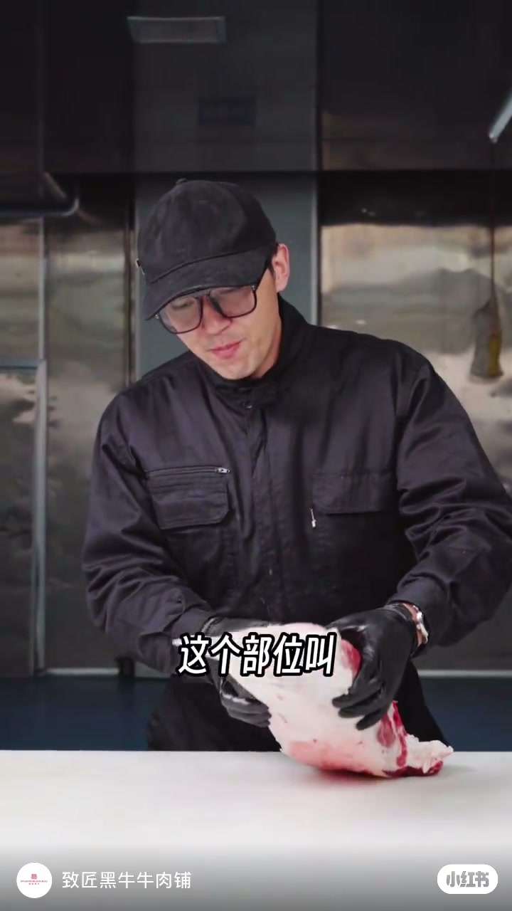
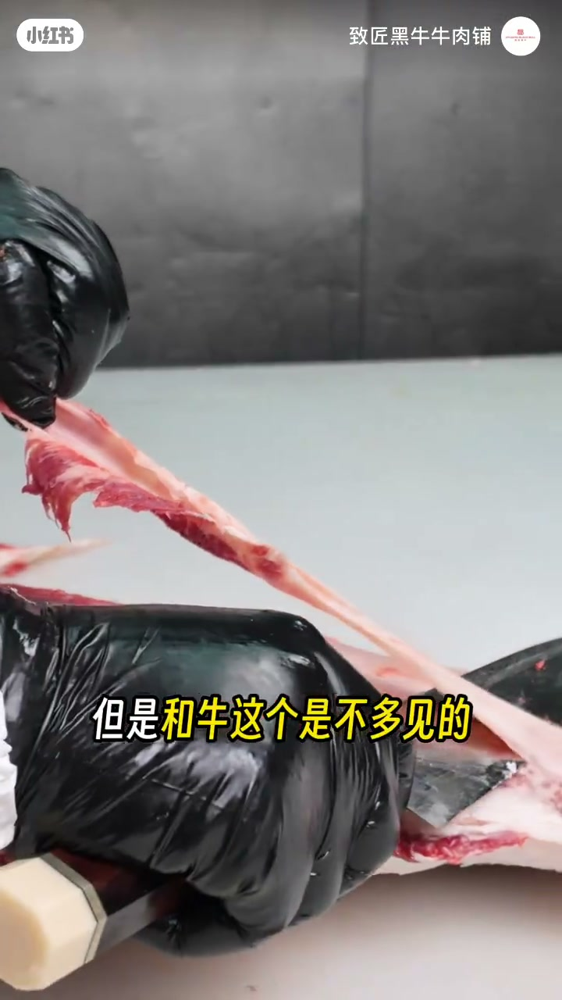
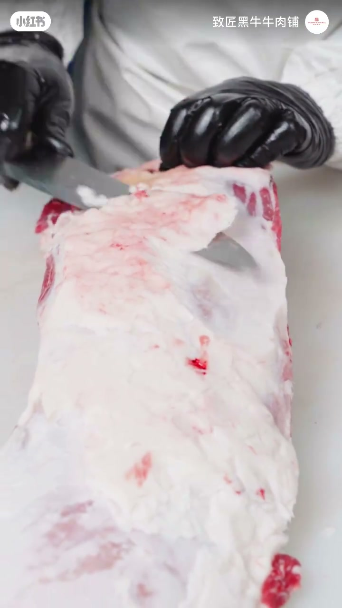
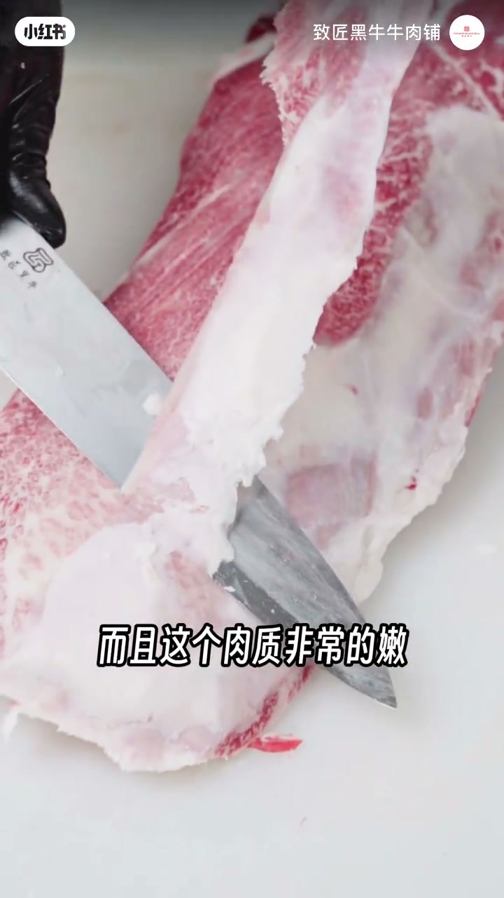
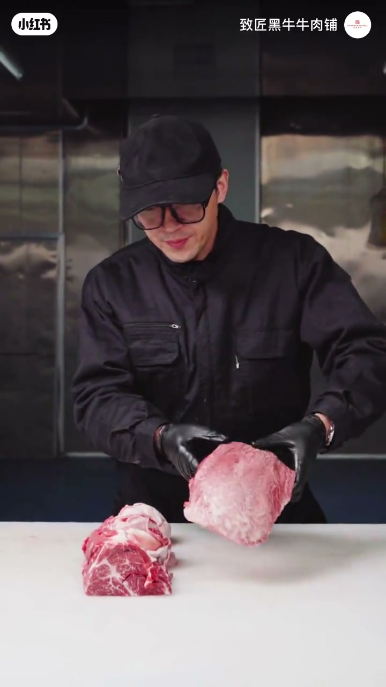

内容要点
致匠黑牛展示国产和牛板键的新鲜分割：市面少见，却是能煎、能烤、能涮的全能部位，做刺身时作者形容有点金枪鱼腹肉的味道。外膘油偏薄，潮汕打火锅里与「石饼」相关；精修下来的肉精都是好东西。
知识结构
板键市面销售不多，看新鲜分割很有必要；普通黄牛常见，和牛板键少见。
能煎能烤能涮；最大特点是刺身，口感有点金枪鱼腹肉味道。
外膘油比较薄；潮汕打火锅出名的「石饼」与此部位相关。
展示精修结果，收尾「这下大家都明白了吧」。
板键的卖点是全能吃法+刺身潜力；和牛版本比黄牛少见，精修重点在薄外膘与筋膜，别只当普通烤肉片买。
00:00-00:40板键少见，所以更要看新鲜分割
开场点名：「这个部位叫板键。」作者承认市面上销售的也不多，「所以在这里大家能看看这个新鲜分割是非常有必要的」。对照一句：普通黄牛肉大家经常能看得到，但是和牛这个不多见——稀缺本身就是观看价值。


00:40-01:02全能部位，刺身有金枪鱼腹肉感
功能定位很满：「板键这个部位属于能煎能烤能涮的全能部位」，还有一个最大特点就是刺身。「这个肉如果吃刺身的话有点金枪鱼腹肉的味道」——这是作者的感官类比，当作体验参考而非实验室数据。
接着修掉外膘油，「这个油脂还算是比较薄的」。地域吃法上，他提到这个部位在潮汕打火锅非常出名，就是「石饼」。


01:31-02:04修完一看：肉精里面都是好东西
中后段有画面展示「会是这个样子的」，收尾强调「所以肉精里面都是好东西」「这下大家都明白了吧」。全程口播偏短、中间有空白，叙述以精修动作与最终品相为主。

完整转录（16段）
以下文本由 Whisper medium 模型自动转录，可能存在少量识别误差，已尽可能修正。
这个部位叫板剑
反正市面上销售的也不多
所以在这里大家能看看这个新鲜分割是非常有必要的
普通黄牛肉大家能经常能看得到
但是和牛这个是不多见的
板剑这个部位属于能煎能烤能涮的全能部位
而且这个部位还有一个最大的特点
就是刺身
这个肉如果吃刺身的话有点金枪鱼打南的味道
然后修掉外标油
这个油脂还算是比较薄的
这个部位在潮汕打火锅是非常出名的
就是石饼
会是这个样子的
所以肉精里面都是好东西
这下大家都明白了吧